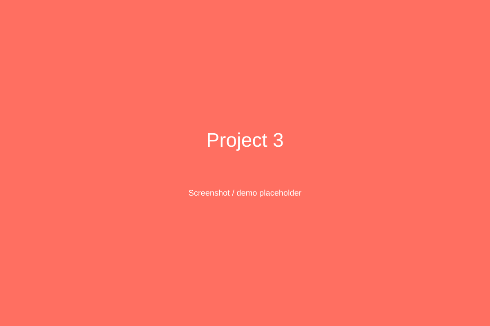

Assignment 01 — Top 5 Travel Spots in Texas
Exploring hidden gems and cultural destinations across the Lone Star State.

Travel Destinations
-
Galveston
Galveston is not just known for its beaches but its history. You can go to Galveston to not just enjoy the ocean but to see the culture it holds.
-
Dallas
Dallas is known for the big city life but many people don't know there are hidden gems where you will not even feel like you're in the city. Just like the Dallas Arboretumit feels like you are nowhere near the big city when you are surrounded by some of the most beautiful gardens.
-
Tyler
East Texas is the place to be. The feeling of being in a small town but still surrounded by so many things to do. Just like the rose garden that has so much history to Tyler.
-
Round Rock
Round Rock is known for the biggest donut in Texas. Even though they are so good they also offer many parks you can visit.
-
Fredericksburg
Fredericksburg is where it is still country and it feels like you're not in Texas anymore with all the hills. There is place to eat, history to learn and the great outdoors to explore.
Even though this is a short list of places to see in Texas I believe they will not disappoint if you make the trip. That is why I picked them for the top 5.